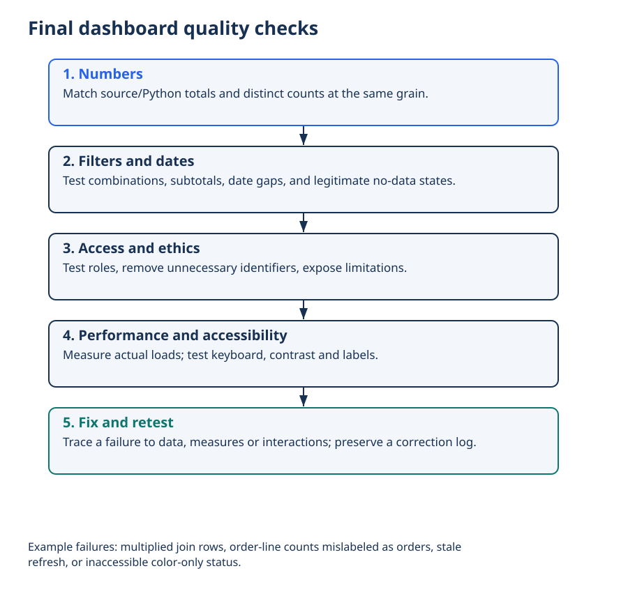

Lecture 29: Final Dashboard Completion
Build the Power BI (or equivalent) model, required measures, and a stakeholder-ready multi-page dashboard. This is the synthesis of Modules 4–5 plus Capstone lab outputs.
1. Learning Objectives
- 1 Implement a clean star-schema model for your Capstone data.
- 2 Create the required measure set (totals, ratios, time intelligence where dates exist).
- 3 Design 2–4 coherent dashboard pages with a clear story flow.
- 4 Run a final QA checklist (quality, ethics, performance, accessibility).
2. Model Build (Module 5)
- Fact table(s) at the correct grain; dimension tables for entities you filter/group by.
- Single-direction relationships; avoid unnecessary bidirectional filters.
- Marked continuous date table if you use Time Intelligence.
- Hide technical columns; keep only user-facing fields visible.
3. Required Measure Set
- Primary KPI total (e.g. Total Sales / Total Incidents / Total Cost)
- At least one ratio or rate (e.g. Average Order Value, Incident Rate)
- At least one comparison (Prior Period or % of Total)
- If dates exist: YTD or Prior Year + YoY % (from L24)
- Optional: running total or target variance
4. Page Blueprint (Recommended)
| Page | Purpose |
|---|---|
| 1 · Executive Overview | KPI cards + main trend + top insight callouts |
| 2 · Deep Dive / Drivers | Breakdowns by category, region, segment; contribution analysis |
| 3 · Time / Detail | Time intelligence, running totals, or operational detail table |
| 4 · Ethics & Methods (optional but recommended) | Data sources, limitations, bias notes, definitions |
5. Final QA Checklist
- Numbers — spot-check totals against source or Python EDA.
- Filters — slicers behave correctly; no unexpected blank results.
- Performance — pages load in a few seconds on typical hardware.
- Accessibility — readable titles, sufficient contrast, tooltips where helpful.
- Ethics — no personal data; limitations visible; language non-causal.
- Story — a new viewer can understand the main message in under 2 minutes.
6. Deliverable
- Power BI file (.pbix) or equivalent interactive dashboard
- One-page methods / data dictionary note
- Ethics & Limitations section (in the file or a short PDF)
- Export of key pages as PDF/images for the presentation
7. Summary
A Capstone dashboard is not a collection of charts — it is a decision-support product. Model cleanly, measure intentionally, design for the story, and document the limits.
Worked practice: Perform QA before sharing
Test join counts, duplicate keys, totals, blanks, slicer reset, keyboard navigation, narrow-screen readability, refresh and access roles. Ask a peer to reproduce one KPI.
Interpretation check: Technical correctness and usability are separate checks. Include uncertainty and source limitations in the report rather than concealing inconvenient exceptions.
Setup, all labs, datasets, DAX measures and capstone guidance · Interactive retail teaching report
Final dashboard quality checks


Interpret: How can a plausible number still be wrong?
Incorrect grain, joins or filter context can produce believable but invalid totals.
Read diagram labels (mobile text)
- Final dashboard quality checks
- 1. Numbers
- Match source/Python totals and distinct counts at the same grain.
- 2. Filters and dates
- Test combinations, subtotals, date gaps, and legitimate no-data states.
- 3. Access and ethics
- Test roles, remove unnecessary identifiers, expose limitations.
- 4. Performance and accessibility
- Measure actual loads; test keyboard, contrast and labels.
- 5. Fix and retest
- Trace a failure to data, measures or interactions; preserve a correction log.
- Example failures: multiplied join rows, order-line counts mislabeled as orders, stale
- refresh, or inaccessible color-only status.
Your reading progress
Completion is self-reported reading progress, not a mastery score. Use the lab and interpretation checks to assess understanding.